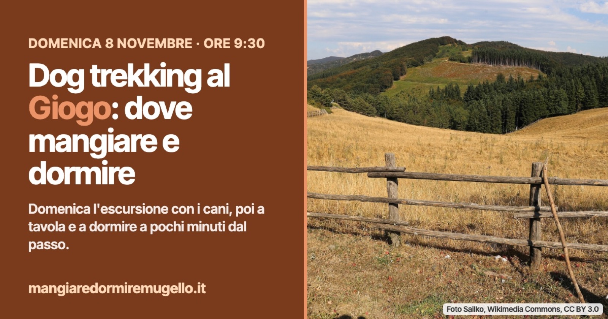

Dog trekking al Passo del Giogo: dove mangiare e dormire con il cane
Domenica 8 novembre un'escursione guidata di 6 km con i cani sul Sentiero del Respiro. Intorno al Giogo, a meno di 2 km, ristoranti e due strutture segnate come pet friendly.

Domenica mattina, al Passo del Giogo, a dettare il passo saranno i cani. L'8 novembre Ombre del Bosco e La Casetta di Grezzano portano padroni e quattro zampe sul Sentiero del Respiro, tra faggete e panorami dell'Appennino: 6 km circa, dislivello di 180 metri, difficoltà facile.
Il ritrovo è alle 9:30 al passo, l'arrivo verso le 13 e il pranzo è al sacco. Cammina con il gruppo una guida ambientale escursionistica AIGAE insieme a un'educatrice cinofila ENCI. La quota è di 15 euro a persona, 8 euro per i bambini sotto i 12 anni e 5 euro per ogni cane. Ci si iscrive con il modulo indicato nell'evento Facebook: https://www.facebook.com/events/1663322568775330/
A tavola dopo il sentiero
Chi non vuole tornare subito a valle ha due indirizzi a pochi minuti dal ritrovo, lungo la strada del Giogo sul versante di Scarperia: il Ristorante il Giogo, in via del Giogo 19, a circa 1,3 km in linea d'aria, e l'Osteria Nandone, in località Omomorto, a circa 1,8 km.
Ristorante il Giogo: https://mangiaredormiremugello.it/s/ristorante-il-giogo/
Osteria Nandone: https://mangiaredormiremugello.it/s/osteria-nandone/
Dormire vicino al Giogo, con il cane
Nell'elenco ufficiale delle strutture due si dicono pet friendly: il Rifugio Alpino Casa al Giogo, proprio al passo sul lato di Firenzuola, e l'agriturismo Lutiano, in via del Giogo. Sempre lì vicino ci sono anche l'Albergo il Giogo e il B&B Villa Giuliana. Chi arriva con il cane fa bene a dirlo quando telefona.
Rifugio Alpino Casa al Giogo: https://mangiaredormiremugello.it/s/rifugio-alpino-casa-al-giogo/
Agriturismo Lutiano: https://mangiaredormiremugello.it/s/lutiano/
Albergo il Giogo: https://mangiaredormiremugello.it/s/albergo-il-giogo/
Villa Giuliana: https://mangiaredormiremugello.it/s/villa-giuliana/
Tutti gli altri posti del Comune: https://mangiaredormiremugello.it/dove-dormire/scarperia-e-san-piero/
Se il meteo non lo permette o non si arriva al numero minimo di iscritti, l'escursione viene annullata con 24 ore di preavviso.
Fonte: Evento Facebook di Ombre del Bosco e La Casetta di Grezzano